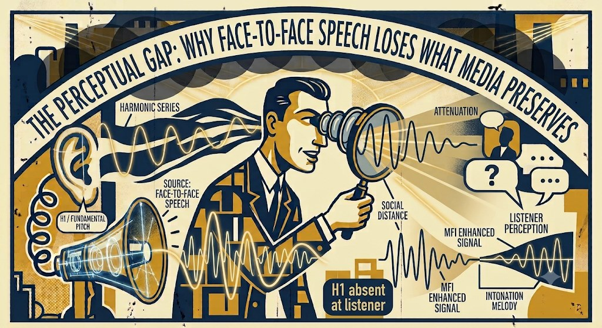

Read at the level that matches your curiosity. Each section stands on its own.

The perceptual gap: why face-to-face speech loses what media preserves. H1/fundamental pitch is present and full-amplitude at the source (left) and attenuates relative to higher harmonics across social distance — arriving degraded or absent at the listener (right, "H1 absent at listener"). The brain's MFI reconstruction attempts to recover intonation melody from the surviving harmonic series; the question mark and "listener perception" label indicate that this reconstruction is unreliable for a significant subset of people. Note: the bottom-right waveform cluster labels ("MFI Enhanced Signal," "Intonation Melody") depict the brain's reconstructed percept — not a clean signal arriving intact. For many listeners, that reconstruction is distorted or absent. Illustration generated with Gemini; physics and labeling revised iteratively.
When a sound source produces a fundamental pitch (the lowest frequency in a harmonic series), the auditory pathway can often reconstruct that pitch even when the fundamental itself is absent — inferring it from the harmonics that remain. This is the Missing Fundamental Illusion (MFI). The reconstruction involves a complex interaction across multiple levels of the auditory system, from brainstem structures including the superior olivary complex through auditory cortex, likely with frontal involvement in voice identification. For people with impaired H1 perception, this pathway does not perform the reconstruction reliably — the failure point within the pathway is not yet well characterized.
In everyday conversation, intonation melody rides on the fundamental pitch. At social distances, that fundamental attenuates faster than the harmonics above it — arriving degraded or absent at the listener. What arrives at the listener's ears is the harmonic stack — without the melodic information it once carried. The brain attempts reconstruction. Whether that reconstruction is accurate varies significantly between individuals.
Resonero addresses this by delivering intonation melody back into the room acoustically — before reconstruction is necessary.
Why it matters for communication: Intonation melody is the primary carrier of emotional meaning in speech. It's what distinguishes a sincere "thank you" from a sarcastic one; what signals a question from a statement; what carries warmth, frustration, care, or boredom. Without it, words are ambiguous.
The human voice produces a complex harmonic series rooted at the fundamental frequency F0 — the instantaneous pitch produced by vocal fold vibration. F0 typically spans 85–255 Hz in adult speech, with the full harmonic series extending several kilohertz above it.
H1 (F0) propagates spherically — omnidirectionally — while higher harmonics are progressively more directional, delivering a greater proportion of their energy toward the listener. Combined with the inverse square law reduction in intensity with distance, H1 attenuates faster relative to the harmonic series above it. The result: at 2–4 meters, the harmonic energy reaching the listener retains the overtone structure of the voice but has lost much of the H1 energy that defines intonation melody.
Intonation Augmentation captures near-field vocal signal (where F0 is present) via a pickup positioned close to the speaker, processes it to isolate and amplify intonation melody, and re-delivers it into the room acoustically via a speaker. The re-delivered signal is ambient — not directional or headphone-bound — so all participants in the room receive it simultaneously.
The processing chain targets F0 identification, intonation melody extraction, and level-calibrated acoustic reproduction. The goal is perceptual transparency: the delivered signal augments rather than replaces the room acoustics, and should not be identifiable as a separate source by listeners.
| target frequency range | F0 and low harmonics (85–500 Hz approx) |
| delivery method | acoustic (room speaker, not headphone) |
| cable length — home | 3m (processor to speaker) |
| cable length — go | 50cm |
| power — home | USB (wall cube included) |
| power — go | USB (power bank included) |
| patent | filed |
The broadcast voice observation: FM radio announcers use close-miced techniques that capture very high levels of low-frequency energy — far more than Resonero delivers. This broadcast voice is universally described as soothing and calming. If low-frequency sound intrinsically triggered stress (as some polyvagal accounts suggest), broadcast voice would be alarming. It isn't. Our hypothesis: the issue is not low-frequency sound per se, but unidentified low-frequency sound. Intonation Augmentation delivers intonation melody, enabling source identification — and an identified source does not trigger threat response.
Our working model proposes that a subset of people possess neural circuits primed to process intonation pitch information that are not reliably stimulated in face-to-face social speech — because H1 doesn't survive propagation from a human mouth at social distances. These circuits are stimulated in other contexts: close-miked broadcast voice, film, podcasts, intimate conversation at close range. The deficit is specific to social speech, not to auditory capacity generally.
The circuits are not absent or damaged — they engage in the media contexts above. What's missing is reliable engagement in social speech. Resonero provides exactly that: H1 at conversational distance, in the room, continuously. The same stimulus that film and radio deliver incidentally, delivered deliberately into the context that has always lacked it.
A historical note. Reliable H1 reproduction in media is a post-1950s phenomenon — dependent on magnetic tape, FM broadcast, and high-fidelity loudspeakers capable of full-spectrum reproduction. Before that, electrical recording and AM radio had significant low-frequency rolloff that stripped H1 much as social distance does. Before electrical amplification entirely, the only contexts delivering reliable H1 were intimate distance and some close acoustic instruments. The neural circuits in question have had a media stimulus pathway for roughly 70 years — unevenly, depending on access, habits, and cultural context. For most of human history, face-to-face social speech was essentially the only H1 source available, and it fails at social distance.
The reliability of MFI reconstruction varies substantially between individuals. This variation is not fully explained by standard audiological measures (pure-tone audiometry, for example, does not assess MFI reconstruction reliability). The illusion page includes a direct demonstration — Eric's MFI video lets you hear whether your auditory pathway reconstructs H1 reliably.
Variation in reconstruction reliability likely has multiple sources: genetic factors affecting auditory pathway organization at one or more stations, developmental history of acoustic exposure, and neurological variation across the pathway — from brainstem through cortex — in how periodicity pitch is extracted from harmonic information. The specific locus or loci of failure for impaired MFI perceivers are not yet well characterized in the literature.
Polyvagal-based auditory interventions (e.g., Forbrain and related approaches) target nervous system stress response via bone conduction delivery of modulated sound. The proposed mechanism is direct vagal modulation.
Our approach targets a different layer: intonation melody identification, not nervous system state. We hypothesize these address distinct populations and distinct mechanisms — not the same challenge via different paths.
The sleep observation from early users (urban sounds ceasing to trigger wakefulness) is consistent with a threat-identification account: when intonation melody is present, previously ambiguous low-frequency percepts become identifiable as human-sourced and non-threatening. This is distinct from a nervous system regulation account.
We welcome rigorous examination of both hypotheses. We may be wrong about the mechanism. We are confident the effect is real.
Research collaboration: We are seeking collaborators in audiology, neuroscience, SLP, psychoacoustics, and polyvagal research. We offer anonymous aggregated test data, access to IA research, co-authorship opportunities, and collaborative research design. Contact: info@resonero.com — subject: "Research Collaboration Interest — [your field]"
The psychoacoustic mechanism underlying Resonero is grounded in established science. The clinical and communicative outcomes evidence is being built now — through IRB-approved research at UTEP and collaboration with researchers across audiology, organizational behavior, and clinical practice.
Citations marked [VERIFY] have been provided in good faith but should be confirmed before relying on them for scholarly purposes. The Asilomar citation is exact as provided by the authors.
| Missing Fundamental Illusion | The perceptual phenomenon by which the auditory system infers a missing fundamental pitch from its harmonics. Foundational work: Licklider, J.C.R. (1954). "Periodicity" pitch and "place" pitch. Journal of the Acoustical Society of America. [VERIFY: author and date HIGH confidence; journal and title MED] |
| H1 attenuation / inverse square law | Sound intensity decreases with the square of distance from the source. Low frequencies, including H1, propagate less directionally and are more susceptible to room and distance attenuation than higher harmonics. Standard acoustics. See any graduate-level acoustics text, e.g. Kuttruff, H. — Room Acoustics. [VERIFY: author HIGH; specific edition UNKNOWN] |
| Auditory masking models | The argument that H1 at socially-attenuated levels is rendered inaudible by higher harmonics draws on established masking models cited in the Asilomar paper. See that paper's reference list for the specific models used. |
| Intonation Augmentation — published work | K. Moreno, N. Rovelli, C. Lauter and E. Freudenthal, "Intonation: Barely audible sounds that normies hallucinate," 2025 59th Asilomar Conference on Signals, Systems, and Computers, Pacific Grove, CA, USA, 2025, pp. 290–293. doi: 10.1109/IEEECONF67917.2025.11443681 |
| Prosody and emotional communication | The role of fundamental frequency in conveying emotional meaning in speech is well-documented in the prosody literature. Key researchers include Scherer, K.R. [VERIFY: HIGH confidence on researcher; specific papers UNKNOWN without lookup] and the broader field of affective prosody. |
If you are a researcher who sees errors, omissions, or mischaracterizations in how we've described the underlying science, please contact efreudenthal@utep.edu. We'd rather be corrected than wrong.